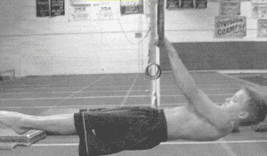
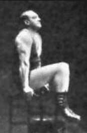
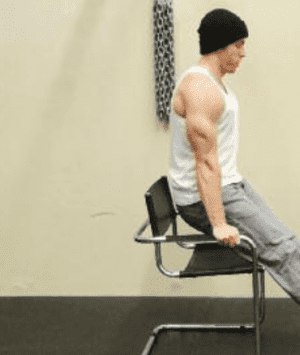
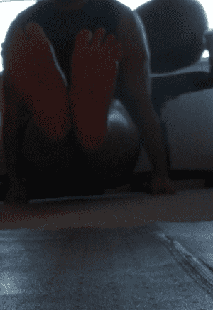
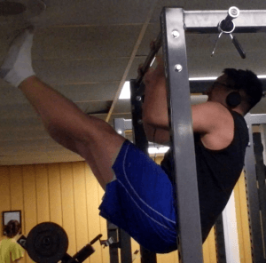
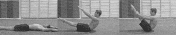

< < < Back
How Gymnastics Can Improve Your Total Body Fitness – Return Of Kings
“Jesus H. Christ, Larsen!” you’re probably exclaiming in horror. “Gymnastics? Why don’t I just wear a man-corset and sashay myself around the town square while I’m at it?” But before you swear off fitness forever, angrily storm off Return Of Kings, and go hang out with the “migtows,” allow me to explain why I am bringing this ancient sport to a website explicitly for masculine men.
I am fully aware that, yeah, gymnastics are kind of fruity-particularly rhythmic gymnastics and floor routines. But since those last two things suck, I will never be showing you them. Instead, this article will be the first of several articles discussing various techniques involving the bars and rings. And while those are still a bit effete, I will ask you to ignore that gut feeling for a moment.
“But why?” It’s simple: if you’re on a budget, there’s no better way to build awe-inspiring strength. Take a look at this front body lever:

The amount of total body strength you need to pull off a maneuver like that is nigh mythical in our age of weakness-indeed, your average Olympic class men’s gymnast is quite capable of deadlifting twice his own bodyweight, in addition to having world-class levels of agility and dexterity. Such strength and dexterity is also needed to use the pommel horse or (my favorite) the rings.
Just to make something clear, I am not an Olympic class gymnast—I’m 6 feet tall and I currently weigh 210 pounds. Even when I cut the fat and get to my absolute leanest, I’m still somewhere around 175-180 pounds. Clearly, a career in elite level gymnastics is not in my future. With that being said, I feel that I have been made stronger by my use of gymnastic training (mostly referring to the static positions that represent the fundamentals of the sport), especially since I have unfortunately been laid up these last few months. And there is no reason that you couldn’t use these equally as well.
One of the most basic techniques, a fundamental primer in developing the core strength for future endeavors, is that of the L-Sit and it’s sister, the V-Sit. I have briefly discussed these in a previous article, but today’s article will go over each individual step to attaining these difficult maneuvers.
The L-Sit
Before you start training the L-Sit, you will need parallel bars or something that can approximate the parallel bars: Paralletes are great if you have them (I don’t, and I doubt you do either), but two chairs or even one chair with arm rests will suffice.

The first step in the L-Sit series is the knee raise: Securing yourself with your hands on the parallels, lift your legs up and off the ground as seen in this picture of Thomas Inch, who I have referenced previously in these pages.

The second step is the straight diagonal leg hold: Keeping the legs straight and down, lift the buttocks off the chair while also keeping the feet off the floor.

Note: This image was taken from the second convict conditioning book
The third step, the N Hold, is the first step where you are flat on the floor. Sit down on the floor, plant your hands by your hips, and push off them. You can keep your hands flat or your use fists—I find that the flat hands are a little more difficult for the hip flexors, but the fists allow you to get your feet higher and thus work the abs harder. I would recommend doing both.
From here, you can try doing the true L-Sit. If you can’t, try to extend one leg and keep the other bent, and gradually unbend that leg. Once you have achieved that, it is time to try the true L-Sit: Sit down on the floor with your legs fully extended in front of you. Plant your hands down hard by your hips, and push through. Keeping your legs straight, lift them up off the floor.

Yours truly. I couldn’t have you people thinking I was incapable of doing an L-Sit.
You will likely not be able to hold this for very long-just a couple of seconds is acceptable for beginners.
The L-Sit is a technique you’ll likely not see amongst the curlbros in gyms-mastering it will make you stand out in your training establishment. But should you want to advance further, there are options-namely, the V-Sit.

This is me holding a V-Sit while hanging from a bar. While I can hold this for 30 seconds, I admit that I cannot do a V-Sit on the floor. But thanks to the very helpful book Building the Gymnastic Body, I know the intermediate steps:
Once you have mastered the L-Sit, you are likely capable of doing the V-Raise. This is essentially a sit-up where you bring your legs and upper body up simultaneously, making the body look like the letter V.

When you can do that easily, try to hit the V-Sit: Start in the L-Sit, and slowly pull your legs upward until you have hit the V-Sit. I can hit a higher range of motion than the standard L-Sit, but the true V-Sit still eludes me.
Conclusion
With these techniques, you can develop truly functional core and hip flexor strength, and form a good base for both weightlifting and future gymnastic techniques
Read More: How To Work Out The Lower Half Of Your Body Using Isometric Exercises